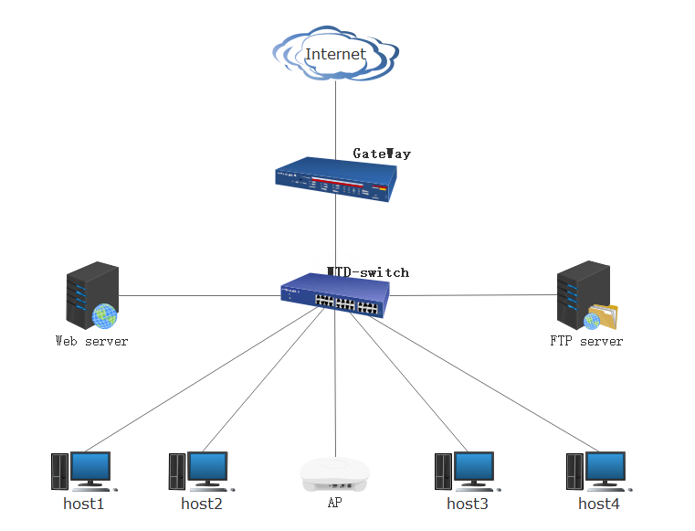
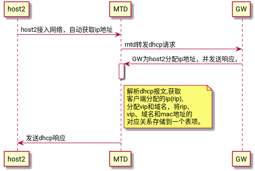
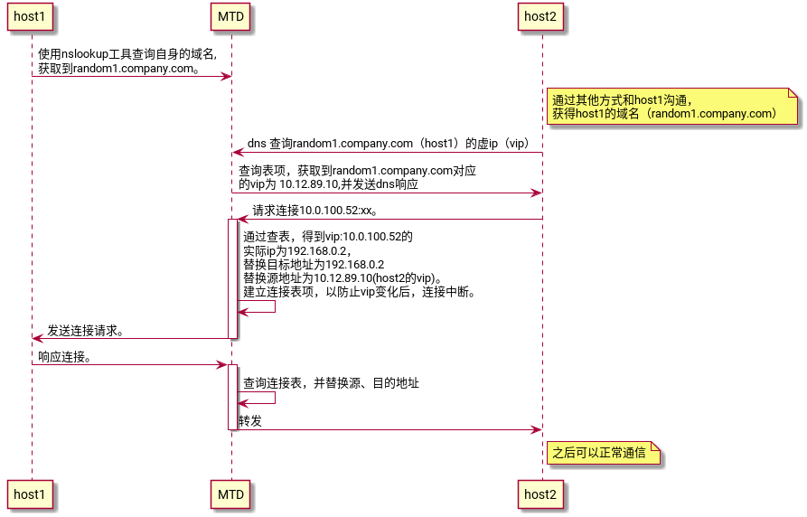
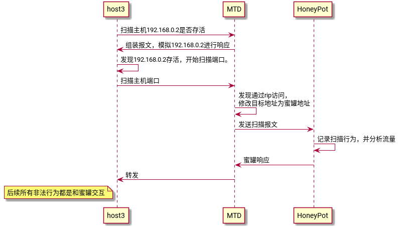

移动目标防御系统实现总结
Table of Contents
参考： 《基于移动目标防御的内网防渗透研究》
1. 介绍
移动目标防御系统主要用来防止进行内网渗透，以保证内网主机的安全。
其技术主要是通过对主机的ip和端口的不断变化，以迷惑攻击者，达到保护内网主机的目的。
2. 技术原理
2.1. 网络拓扑

2.2. 原理说明
- 内网的主机通过dhcp动态获取ip（rip），地址未C段地址范围。
- MTD系统会劫持dhcp报文，获取主机分配的ip（rip）。
- MTD系统在获取到主机的ip后，为主机随机生成一个A段的地址 10.x.x.x(vip)，还生成一个随机域名，并建立一张表，保存其对应关系。
- 内网主机之间访问，需要相互告知对方的域名，通过域名访问，主机可以通过nslookup查询自身的域名。
- MTD受到DNS请求，进行解析，并响应对应的vip
- MTD受到目的地址为vip的报文，查询对应的实际ip，并分别替换目的地址为rip，源地址为vip，并转发报文。同时还建立连接表项，防止vip发生变化后，连接无法维持。
- 通过rip访问的报文，都认为是非法访问，转发给蜜罐平台捕获。
2.3. ip变换原理
| 主机 | 主机实际ip（rip） | 主机虚ip（vip） | 随机域名 |
|---|---|---|---|
| host1 | 192.168.0.2 | 10.0.100.52 | random1.company.com |
| host2 | 192.168.0.3 | 10.12.89.10 | random2.company.com |
| host3 | 192.168.0.102 | 10.2.45.9 | random3.company.com |
2.3.1. dhcp分配ip过程
- 内网的主机通过dhcp动态获取ip（rip），地址为C段地址范围。
- MTD系统会劫持dhcp报文，获取主机分配的ip（rip）。
- MTD系统在获取到主机的ip后，为主机随机生成一个A段的地址 10.x.x.x(vip)，还生成一个随机域名，并建立一张表，保存其对应关系。

2.3.2. host1和host2通信
- 网络内部的主机通讯需要通过域名，每个主机可以通过nslookup查询本机的域名。
- 每个主机只能查询自身的域名。
- 主机之间通讯，需要相互告知对方的域名，使用域名建立连接。

2.3.3. 内网某台主机被控制后，在内网扫描过程
- 首先内网中的主机之间通信，只能通过虚ip进行通信，其他一律送入蜜罐平台，对其行文进行诱惑以及分析记录。
- 对于扫描主机的行为，MTD可以回应虚假的响应，迷惑攻击者。
